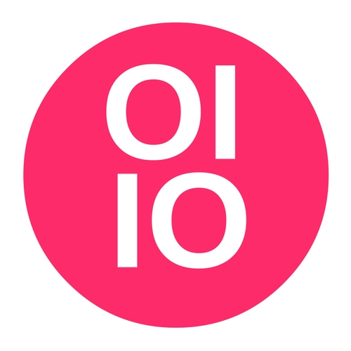
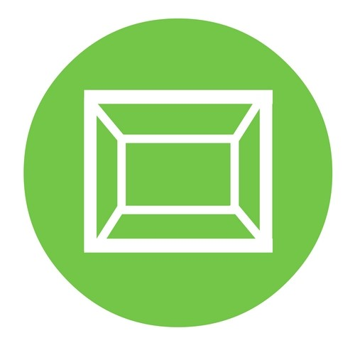

<!DOCTYPE html>
<html lang="en"></html>
<head>
  <meta charset="utf-8">
  <meta name="description" content="Digitalization and R&amp;D Management Homepage">
  <meta name="keywords" content="digitalization, big data, collaboration, virtual experimentation, simulation">
  <meta name="copyright" content="The Industrial Research Institute, Inc.">
  <meta name="author" content="Greg Holden">
  <meta name="robots" content="index, follow">
  <!-- Font Awesome CDN-->
  <script src="https://use.fontawesome.com/5e0443a723.js"></script>
  <!--build:css assets/styles/styles.css-->
  <link rel="stylesheet" href="assets/styles/styles.css">
  <!--endbuild-->
  <title>Digitalization - Homepage</title>
</head>
<body data-spy="scroll" data-targt=".navbar" data-offset="50">
  <!-- Header/Logo-->
  <header class="jumbotron">
    <div class="container-fluid">
      <p class="title">Digitalization</p>
      <p class="subtitle">And its Implications for R&amp;D Management</p>
    </div>
  </header>
  <nav class="navbar navbar-toggleable-md navbar-inverse fixed-top">
    <button class="navbar-toggler navbar-toggler-right" type="button" data-toggle="collapse" data-target="#myNavbar" aria-controls="myNavbar" aria-expanded="false" aria-label="Toggle navigation"><span class="navbar-toggler-icon"></span></button><a class="navbar-brand" href="#"></a>
    <!-- navbar contents-->
    <div class="collapse navbar-collapse justify-content-between" id="myNavbar">
      <ul class="navbar-nav">
        <li class="nav-item"><a class="nav-link" id="aboutLink" href="#about">About</a></li>
        <li class="nav-item"><a class="nav-link" id="bigdata" href="#projects">Big Data</a></li>
        <li class="nav-item"><a class="nav-link" id="collaboration" href="#projects">Collaboration</a></li>
        <li class="nav-item"><a class="nav-link" id="ves" href="#projects">VE&amp;S</a></li>
      </ul>
      <ul class="navbar-nav">
        <li class="nav-item"><a class="nav-link" href="#contact"><i class="fa fa-envelope-o"><span class="fa-text"> Contact</span></i></a></li>
      </ul>
    </div>
  </nav>
  <div class="row section justify-content-between" id="about">
    <div class="col-md-7 txt">
      Every two years, the Industrial Research Institute (IRI) endeavors to 
      make a big splash with their research via a large-scale project.
      The first such project was called the <em>IRI2038 Futures Study</em>, 
      which took a deep look into the future of managing research and development (R&amp;D)
      using futurist forecasting tools and techniques. The 
      current project, which ends the week of October 16, 2016, is on 
      the implications of the rising "Digital Era" on the function and 
      management of R&amp;D.<br><br>This project received a kick start from a thought-provoking presentation
      by Temple University's Dr. Youngjin Yoo who spoke at the 2014 IRI 
      Member Summit in Denver, Colorado.<br><br>Following Dr. Yoo's presentation, discussions began on how to incorporate
      his ideas into a research project. IRI's next big thing, the 
      Digitalization Project, as it became known, got its official start
      shortly thereafter, in early 2015.<br><br><br>
      <h3>The Digitalization Research Platform</h3><br>This project consists of R&amp;D managers and executives from large,
      product development companies coming together at IRI events, and
      virtually, to collaborate on how digitalization affects their 
      respective industries. The project is broken into three groups: 
      Big Data, Collaboration, and Virtual Experimentation &amp; Simulation, 
      or VE&amp;S.<br><br>The Digitalization Project will culminate at the 
      2016 Member Summit in Chicago, Illinois, where all three project 
      teams will be presenting their findings. It is the intention of 
      this project to provide a comprehensive guide for maximizing the 
      benefits of digitalization on innovation while avoiding 
      common pitfalls. As with all IRI research, this project will be done by 
      practitioners, for practitioners, with a focus on tangible 
      take-aways that can be implemented in the near term.
    </div>
    <div class="col-md-4 txt">
      <h3><i class="fa fa-rocket"> <span class="fa-text">Launch Date: Early 2015</span></i></h3><br>
      <h3><i class="fa fa-paperclip"> <span class="fa-text">Wrap-Up Date: October 2016</span></i></h3><br>
      <iframe src="https://www.youtube.com/embed/FN1veSd7LEY" width="420px" height="250px" allowfullscreen></iframe>
    </div>
  </div>
  <div class="row section section__projects" id="projects">
    <div class="section__projects__title ml-auto mr-auto">The Digitalization Research Working Groups</div><br><br>
    <div class="row text-center">
      <div class="col-md-4">
        <div class="img-thumbnail"><a href="#"></a>
          <p><strong>Big Data</strong></p>
        </div>
      </div>
      <div class="col-md-4">
        <div class="img-thumbnail"><a href="#"></a>
          <p><strong>Collaboration</strong></p>
        </div>
      </div>
      <div class="col-md-4">
        <div class="img-thumbnail"><a href="#"></a>
          <p><strong>Virtual Experimentation &amp; Simulation</strong></p>
        </div>
      </div>
    </div>
  </div>
  <!-- build:js assets/scripts/App.js-->
  <script src="assets/scripts/App.js"></script>
  <!-- endbuild-->
  <!-- Bootstrap JS CDNs-->
  <script src="https://code.jquery.com/jquery-3.1.1.slim.min.js" integrity="sha384-A7FZj7v+d/sdmMqp/nOQwliLvUsJfDHW+k9Omg/a/EheAdgtzNs3hpfag6Ed950n" crossorigin="anonymous"></script>
  <script src="https://cdnjs.cloudflare.com/ajax/libs/tether/1.4.0/js/tether.min.js" integrity="sha384-DztdAPBWPRXSA/3eYEEUWrWCy7G5KFbe8fFjk5JAIxUYHKkDx6Qin1DkWx51bBrb" crossorigin="anonymous"></script>
  <script src="https://maxcdn.bootstrapcdn.com/bootstrap/4.0.0-alpha.6/js/bootstrap.min.js" integrity="sha384-vBWWzlZJ8ea9aCX4pEW3rVHjgjt7zpkNpZk+02D9phzyeVkE+jo0ieGizqPLForn" crossorigin="anonymous"></script>
</body>